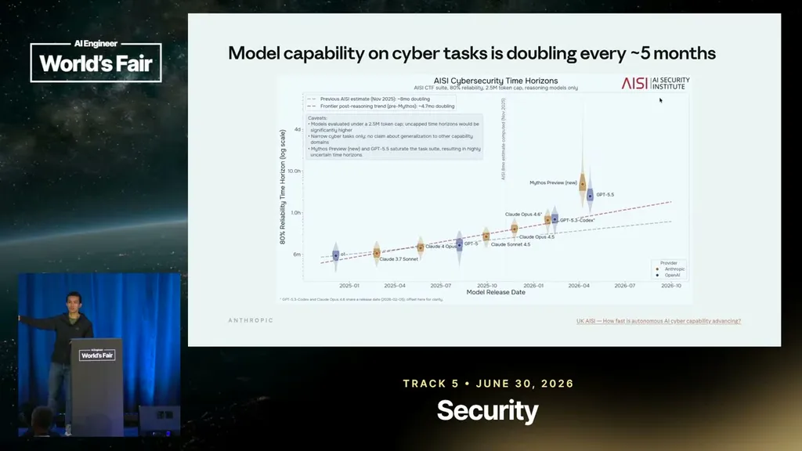
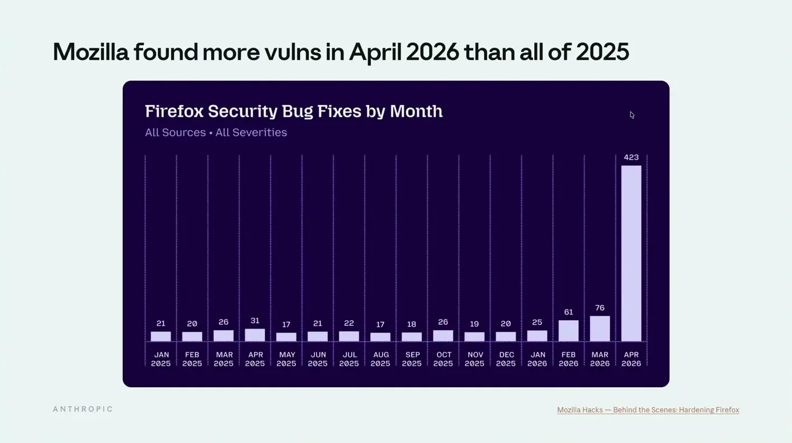
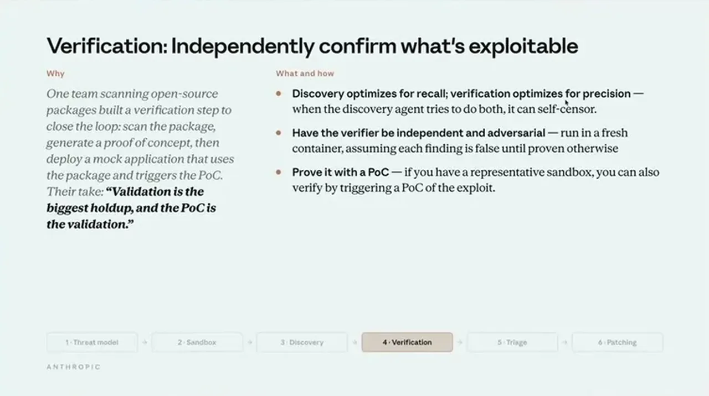

Yan opens with capability-trend evidence: cyber-focused time-horizon benchmarks show models handling longer security tasks with a step jump over the prior trend line. He cites Mozilla Firefox's monthly security bug-fix counts, which rose from roughly 20 per month in 2025 to about 400 in April, a 20x jump over the prior year's average, with Mozilla attributing about two-thirds of that to Claude. Anthropic ran its own scan of more than a thousand open-source repositories and rated a substantial share of the candidate findings as high or critical severity.
“So in this chart we see that models are able to increasingly do longer cyber security task.”
▶ watch at 01:33“in April it 7xed to 400. So what this means is that what's happened in April is 20x of last year's average.”
▶ watch at 02:06“from 23,000 candidates uh 6,200 of them were rated as high or critical and at the time of the update 1,600 of them were reported to maintainers and about 100 patch upstream”
▶ watch at 03:08
Yan states plainly that finding vulnerabilities is now comparatively easy; the constraint has shifted downstream to verifying that a finding is real, triaging which ones matter, and actually patching them.
“The bottleneck has now shifted to verification, triage, and patching.”
▶ watch at 03:39
Teams converge on roughly six steps: threat modeling and sandbox setup, then a discovery-verification-triage-patch loop. A threat model is a written document of a system's assets, entry points, and threat vectors, since models understand code well but lack unwritten context about why a system was designed a certain way. Yan reports that teams with a well-documented threat model saw true-positive rates reach 90%.
“having a well doumented thread model really increases your true positive rate to 90%”
▶ watch at 05:42In the discovery step, giving the model tools to query APIs, read logs, and read source code (rather than only reading code) took one pentesting team's true-positive rate to almost 100%. Verification is kept as a separate step from discovery, and Yan recommends the verification agent be independent (it doesn't see the discovery agent's reasoning trace) and adversarial (it starts by assuming the finding is false and tries to confirm or disconfirm it), which raises the bar before a vulnerability is reported.
“Allow the model to be dynamic to read the tools uh to to run the tools. And when they did this, their true positive rate was almost 100%.”
▶ watch at 10:23“it's helpful for the verification agent to be independent and adversarial. Independent means that the verification agent doesn't see the reasoning traces”
▶ watch at 11:56
Yan notes that as models improve, prompts should shrink rather than grow; he had to cut his own prompt size by about half with each new model version, moving from prescriptive vulnerability categories toward general instructions. His closing advice is to begin with open-source dependencies, work interactively with a coding agent before attempting automation, and focus organizational effort on verification, triage, patching, and process rather than on scanning itself.
“I actually have to cut my prompt size by maybe about 50%”
▶ watch at 09:51“Don't try to aim for automation immediately. Right? Start interactively. Do it hands on the wheel with uh claw code or your favorite ID.”
▶ watch at 20:19The Mozilla and Anthropic-repo-scan figures come from Anthropic's own telemetry and a partner's public numbers rather than an independent audit, so the magnitude of the capability jump is plausible but not independently verified here. The prescriptive workflow (threat model, sandbox, discovery, verification, triage, patch) reads as Anthropic's synthesis of pattern-matching across client engagements rather than a benchmarked methodology, so the 90%/100% true-positive figures likely reflect best-case, well-instrumented teams rather than a typical baseline.
| Stance | Claim | t |
|---|---|---|
| asserts | Cyber-focused time-horizon benchmarks show models increasingly able to complete longer security tasks, with a step jump over the prior capability trend. | 01:33 |
| asserts | Mozilla's monthly security bug fixes jumped 7x to 400 in April, twenty times the prior year's average. | 02:06 |
| asserts | Of 23,000 candidate findings from Anthropic's scan of open-source repos, 6,200 were rated high or critical, 1,600 were reported to maintainers, and about 100 were patched upstream. | 03:08 |
| asserts | With vulnerability discovery now comparatively easy, the bottleneck has shifted to verification, triage, and patching. | 03:39 |
| asserts | Teams that build a well-documented threat model see true-positive rates reach 90%. | 05:42 |
| recommends | Letting the model run tools (query APIs, read logs) instead of only reading code pushed one pentesting team's true-positive rate to almost 100%. | 10:23 |
| recommends | A verification agent should be kept independent of the discovery agent's reasoning trace and should adversarially assume a finding is false before confirming it. | 11:56 |
| asserts | Yan found he had to cut his prompt size by about half with each new model version as models improved. | 09:51 |
| recommends | Yan recommends starting with interactive, hands-on use of a coding agent rather than aiming for automation immediately. | 20:19 |
Machine-readable copy embedded in this page (script#ontology) and in the corpus ontology.